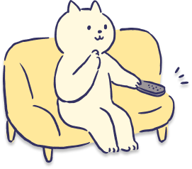
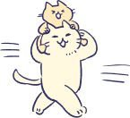

Adoption Flow
譲渡までの流れ
安心できるステップを設け、譲渡まで丁寧にサポートいたします。
-
01 受付・アンケート
会場にて、まずアンケートをご記入いただきます。 猫ちゃんが安心して暮らせる環境かどうかを大切に考えるため、 家族構成や住環境、猫との暮らしについてお伺いします。 不明点があれば、その場でスタッフがご説明します。
-
02 猫と出会う
会場で気になる猫ちゃんと実際に触れ合っていただきます。 性格やしぐさ、ほかの猫との関係性などを見ながら、 ご自身の生活に合うかどうかを、ゆっくり感じてみてください。
-
03 保護主とお話
猫ちゃんのこれまでの生活や性格、健康状態について、 保護主から直接お話を聞いていただきます。 不安なことや分からないことは、遠慮なくご相談ください。
-
04 お申込み
「この子を迎えたい」と思われた場合、里親申込書をご記入いただきます。 猫ちゃんと里親さま、双方が安心して暮らせるご縁となるよう、 内容を確認しながら譲渡の可否を検討します。
-
05 トライアル
一定期間、猫ちゃんを実際にご自宅で迎えて生活していただきます。 猫ちゃんが新しい環境に慣れるか、ご家族が無理なくお世話できるかを 確認する大切な期間です。 期間中は、様子を共有しながらサポートします。
-
06 正式譲渡
トライアル終了後、問題がなければ正式譲渡となります。 譲渡契約を結び、猫ちゃんは新しい家族の一員として新しい生活をスタートします。

F&Q
よくある質問
\ 気になることは？ /

里親募集について
-
さまざまな事情で行き場を失った猫たちです。安全な環境で保護し、 新しい家族を探しています。
-
はい。飼育方法や性格に合わせたアドバイスを行っていますので、 初めての方も安心してご相談ください。スタッフがサポートをさせて頂きます。
-
猫の性格によっては可能です。ご家庭の状況を伺いながら、相性を大切にしています。 相性判断のためのトライアル期間もあり、猫ちゃんの年齢や性格によって異なりますが、 １週間～となります。その子の性格や行動、健康状態等を含めてしっかりと考えて 頂くための期間であり、先住猫ちゃんがいるご家庭ではお互いの相性を試して 頂く期間でもあります。
-
実際に一緒に暮らしてみて、猫とご家族の相性を確認する期間です。 もしトライアル中に不安が出たらいつでもご相談ください。 無理に譲渡を進めることはありません。
-
ペットショップではございませんので、譲渡には審査がございます。保護猫団体により審査基準は異なりますことを御留意くださいませ。 ご迎えた猫も家族も全員が幸せになれるかどうかを慎重に判断するための基準となるので 理解の程よろしくお願いいたします。
-
お留守番時間など条件はありますが、可能な場合もあります。まずはご相談ください。
-
猫の将来を考慮し、サポート体制などを含めてご相談のうえ判断しています。 ご状況などをお伺いしているので、まずは相談ください。
猫の健康・性格について
-
年齢や体調に応じて、必要な医療ケアを行っています。 気になる子がいる場合は、お問い合わせください。
-
はい。個性として受け入れてくださるご家族を探しています。
-
保護中の様子から、できる限り詳しくお伝えします。ただし、トライアル中などは 緊張により普段の様子と違う場合がございますので、ご理解いただけますと幸いです。
ボランティア・支援について
-
はい。できることからお願いしています。 気になることがありましたら、お気軽にご相談ください。
-
可能です。無理のない形でご協力ください。
-
フードや消耗品など、受け付けています（詳細は別ページへ）。

ボランティア内容はこちら outbound